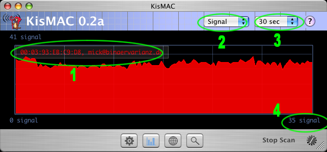

| KisMAC Manual - The Traffic View |
KisMAC's Traffic Grapher...

- This legend shows the current networks in their respective color. You may customize the informations, which are show here, in the traffic preferences.
- You may advice KisMAC to show either current "Signal" values or the "Packet" and "Byte" throughput. Please note that the last two are only available in passive mode.
- Use this popup-button to change the current scale.
- The most recent value is also expressed as a number.
| back | Tell me more |